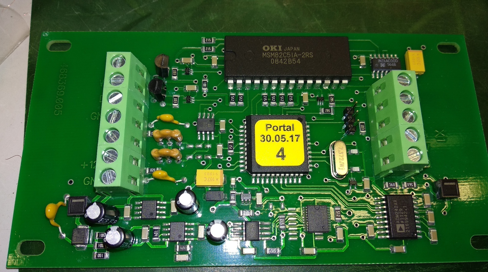

Адаптер 941.
- Сейчас контроллеры для 941-го адаптера ПРОШИВАЮТСЯ ДО УСТАНОВКИ НА ПЛАТУ, поэтому прошивать АИ уже ненужно
- Поставить перемычку
- Подключить питание и USB-адаптер
- Можно немного проще. Потом напишу как
- Запустить Flip
- Выбрать микросхему [1] — AT89C51ED2
- Выбрать порт с подключенным USB-адаптером [2]. Нажать Connect
- Выбрать прошивку [3]
- Оставить флажки "Erase" и "Program"
- Нажать "Run"
- После окончания процесса прошивки снять флаг "BLJB" и поставить уровень "Level 2"
- Достать перемычку!
- Если не шьется — проверить ток (в разрыв 12V питания), должно быть не более 50mA


- Подключить питание и USB-COM адаптер
- Запустить SARKtech
- Выбрать порт с подключенным USB-COM адаптером
- Нажать "Запись адреса" и ввести необходимый номер адреса. ОБЯЗАТЕЛЬНО ЗАДАВАТЬ ДАЖЕ 1-ЫЙ АДРЕС!! 1-й адрес задан по-умолчанию, но если его не задать самому, пульт его НЕ УВИДИТ (хоть он вроде как и первый)
- Для проверки: выбрать номер записанного адреса и нажать "Установить связь". Адаптер должен сразу же подключиться
- После прошивки и проверки работоспособности адаптера, на контроллер наклеить наклейку с версией прошивки и номером адреса или сделать соответствующую надпись маркером 